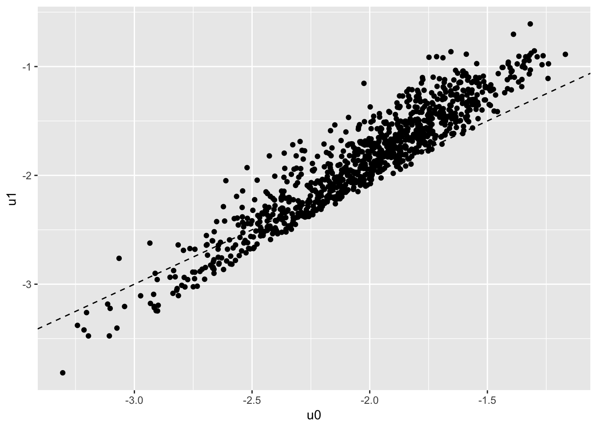

Let’s start with studying static labor supply. We will consider the decision of the agent under the following rule:
\[ \max_{c,h} \frac{c^{1+\eta}}{1+\eta} - \beta \frac{h^{1+\gamma}}{1+\gamma}\\ \text{s.t. } c = \rho \cdot w\cdot h -r + \mu - \beta_0 \cdot 1[h>0] \\ \] The individual takes his wage \(w\) as given, he chooses hours of work \(h\) and consumption \(c\) subject to a given non labor income \(\mu\) as well as a tax regime defined by \(\rho,r\). \(\beta_0\) is a fixed cost associated with working.
We note already that the non labor income can control for dynamic labor supply since we can have \(\mu= b_t - (1+r)b_{t+1}\). This is part of a larger maximization problem where the agents choose optimaly \(b_t\) over time. We will get there next time.
The first order conditions give us \(w(wh +r - \mu)^\eta = \beta h^\gamma\). There is no closed-form but we can very quickly find an interior solution by using Newton maximization on the function \(f(x) = w(wh +r - \mu)^\eta - \beta h^\gamma\). We iterate on
\[x \leftarrow x - f(x)/f'x)\].
# function which updates choice of hours using Newton step
# R here is total unearned income (including taxes when not working and all)
ff.newt <- function(x,w,R,eta,gamma,beta) {
f0 = w*(w*x + R)^eta - beta*x^gamma
f1 = eta*w^2 * (w*x + R)^(eta-1) - gamma * beta *x^(gamma-1)
x = x - f0/f1
x = ifelse(w*x + R<=0, -R/w + 0.0001,x) # make sure we do not step out of bounds for next iteration
x = ifelse(x<0, 0.0001,x)
x
}We are going to simulate a data set where agents will choose participation as well as the number of hours if they decide to work. To do that we will solve for the interior solution under a given tax rate and compare this to the option of no-work.
p = list(eta=-1.5,gamma = 0.8,beta=1,beta0=0.1) # define preferences
tx = list(rho=1,r=0) # define a simple tax
N=1000
simdata = data.table(i=1:N,X=rnorm(N))
simdata[,lw := X + rnorm(N)*0.2]; # add a wage which depends on X
simdata[,mu := exp(0.3*X + rnorm(N)*0.2)]; # add non-labor income that also depends on X
# we then solve for the choice of hours and consumption
simdata[, h := pmax(-mu+tx$r + p$beta0 ,0)/exp(lw)+1] # starting value
# for loop for newton method (30 should be enough, it is fast)
for (i in 1:30) {
simdata[, h := ff.newt(h,tx$rho*exp(lw),mu-tx$r-p$beta0,p$eta,p$gamma,p$beta) ]
}
# attach consumption, value of working
simdata[, c := exp(lw)*h + mu - p$beta0];
simdata[, u1 := c^(1+p$eta)/(1+p$eta) - p$beta * h^(1+p$gamma)/(1+p$gamma) ];At this point we can regress \(\log(w)\) on \(\log(c)\) and \(\log(h)\) and find precisely the parameters of labor supply:
pander(summary(simdata[,lm(lw ~ log(c) + log(h) )]))## Warning in summary.lm(simdata[, lm(lw ~ log(c) + log(h))]): essentially
## perfect fit: summary may be unreliable| Estimate | Std. Error | t value | Pr(>|t|) | |
|---|---|---|---|---|
| log(c) | 1.5 | 3.24e-17 | 4.63e+16 | 0 |
| log(h) | 0.8 | 7.957e-17 | 1.005e+16 | 0 |
| (Intercept) | -7.864e-16 | 6.825e-17 | -11.52 | 6.329e-29 |
| Observations | Residual Std. Error | \(R^2\) | Adjusted \(R^2\) |
|---|---|---|---|
| 1000 | 6.061e-16 | 1 | 1 |
Why does this work?
FOC is
\[w(c)^\eta = \beta h^\gamma\]
take the log of that.
We simply compute the value of choosing \(h=0\), then take the highest of working and not working.
simdata[,u0:= mu^(1+p$eta)/(1+p$eta)];
simdata[,p1:=u1>u0]
ggplot(simdata,aes(x=u0,y=u1)) + geom_point() + geom_abline(linetype=2)
The regression still works, among ecah individual who chooses to work, the FOC is still satified.
pander(summary(simdata[p1==TRUE,lm(lw ~ log(c) + log(h))]))| Estimate | Std. Error | t value | Pr(>|t|) | |
|---|---|---|---|---|
| log(c) | 1.5 | 8.854e-17 | 1.694e+16 | 0 |
| log(h) | 0.8 | 3.556e-16 | 2.25e+15 | 0 |
| (Intercept) | -5.121e-16 | 2.399e-16 | -2.134 | 0.03312 |
| Observations | Residual Std. Error | \(R^2\) | Adjusted \(R^2\) |
|---|---|---|---|
| 770 | 1.316e-15 | 1 | 1 |
# all who don't work, have zero hours and unknown wage
# cannot run regression for p1==FALSE
simdata[p1==FALSE,c("lw","h") := list(NA,0)]## i X lw mu h c u1
## 1: 1 -1.2935968 NA 0.5959253 0.0000000 0.5718775 -2.742282
## 2: 2 -0.3046566 -0.50066231 0.9882107 0.4174640 1.1412477 -1.987451
## 3: 3 0.1323005 -0.05609018 1.1459793 0.4512269 1.4725936 -1.780748
## 4: 4 0.7819102 0.87254925 1.4580357 0.5067761 2.5707526 -1.410837
## 5: 5 -1.2763141 NA 0.6646847 0.0000000 0.6671563 -2.553060
## ---
## 996: 996 2.1327314 1.96173072 2.1891952 0.4775163 5.4851120 -1.000820
## 997: 997 -0.2498827 -0.27916214 0.8653344 0.5292225 1.1656474 -2.029166
## 998: 998 1.1680953 1.12637532 1.6108368 0.5021458 3.0596834 -1.304159
## 999: 999 0.5862581 0.61797802 1.4662721 0.4745951 2.2467282 -1.479552
## 1000: 1000 -1.1414405 -0.95434773 0.6204624 0.5461665 0.7307710 -2.526618
## u0 p1
## 1: -2.590801 FALSE
## 2: -2.011895 TRUE
## 3: -1.868278 TRUE
## 4: -1.656326 TRUE
## 5: -2.453139 FALSE
## ---
## 996: -1.351723 TRUE
## 997: -2.149998 TRUE
## 998: -1.575811 TRUE
## 999: -1.651668 TRUE
## 1000: -2.539056 TRUEFinally we want to add heterogeneity in the \(\beta\) parameter.
simdata[,betai := exp(0.5*X+rnorm(N)*0.1)]
simdata[, h := pmax(-mu+tx$r + p$beta0 ,0)/exp(lw)+1]
for (i in 1:30) {
simdata[, h := ff.newt(h,tx$rho*exp(lw),mu-tx$r-p$beta0,p$eta,p$gamma,betai) ]
}
# attach consumption
simdata[, c := exp(lw)*h + mu - p$beta0];
simdata[, u1 := c^(1+p$eta)/(1+p$eta) - betai * h^(1+p$gamma)/(1+p$gamma) ];
simdata[, u0:= mu^(1+p$eta)/(1+p$eta)];
simdata[,p1:=u1>u0]
# let's check that the FOC holds
sfit = summary(simdata[,lm(lw ~ log(c) + log(h) + log(betai))])
expect_equivalent(sfit$r.squared,1)
expect_equivalent(coef(sfit)["log(c)",1],-p$eta)
expect_equivalent(coef(sfit)["log(h)",1],p$gamma)
# check that it's wrong
sfit = summary(simdata[p1==TRUE,lm(lw ~ log(c) + log(h))])
expect_false(coef(sfit)["log(c)",1]==-p$eta)pander(sfit)| Estimate | Std. Error | t value | Pr(>|t|) | |
|---|---|---|---|---|
| log(c) | 2.061 | 0.02309 | 89.24 | 0 |
| log(h) | 0.2344 | 0.03164 | 7.408 | 3.392e-13 |
| (Intercept) | -0.5521 | 0.01616 | -34.17 | 2.88e-156 |
| Observations | Residual Std. Error | \(R^2\) | Adjusted \(R^2\) |
|---|---|---|---|
| 770 | 0.1442 | 0.968 | 0.9679 |
Q1: Take the simulated data from the model with heterogenous \(\beta_i\). First explain why regressing \(\log(w)\) on \(\log(c)\), \(\log(h)\), and \(X\) does not deliver correct estimates.
The regression \(\log(w)\) on \(\log(c)\), \(\log(h)\), and \(X\) is now misspecified. There is an individual fixed effect \(\beta_i\) which invalidates the previous regression.
Q2: Simulate 2 periods of the model (a short panel), keep everything fixed over the 2 periods, but redraw the wage. Estimate the model in differences and recover the parameters using \(\log(w)\) on \(\log(c)\), \(\log(h)\). How does including or not including participation decision affect the results? Explain.
# add second period income, hours, participation and cons
simdata[,lw2 := X + rnorm(N)*0.2]; # add a wage which depends on X## i X lw mu h c u1
## 1: 1 -1.2935968 NA 0.5959253 NA NA NA
## 2: 2 -0.3046566 -0.50066231 0.9882107 0.4875223 1.1837121 -1.965733
## 3: 3 0.1323005 -0.05609018 1.1459793 0.4315722 1.4540110 -1.787909
## 4: 4 0.7819102 0.87254925 1.4580357 0.3644802 2.2302382 -1.484712
## 5: 5 -1.2763141 NA 0.6646847 NA NA NA
## ---
## 996: 996 2.1327314 1.96173072 2.1891952 0.2361867 3.7688664 -1.157744
## 997: 997 -0.2498827 -0.27916214 0.8653344 0.5764552 1.2013751 -2.008662
## 998: 998 1.1680953 1.12637532 1.6108368 0.3250964 2.5135823 -1.401280
## 999: 999 0.5862581 0.61797802 1.4662721 0.3700116 2.0527076 -1.525608
## 1000: 1000 -1.1414405 -0.95434773 0.6204624 0.7057904 0.7922363 -2.461116
## u0 p1 betai lw2
## 1: -2.590801 NA 0.6161120 -1.2777856
## 2: -2.011895 TRUE 0.8361811 -0.3685270
## 3: -1.868278 TRUE 1.0561998 0.3891387
## 4: -1.656326 TRUE 1.6109322 0.5589031
## 5: -2.453139 NA 0.5116795 -1.0966222
## ---
## 996: -1.351723 TRUE 3.0835311 2.0905445
## 997: -2.149998 TRUE 0.8925469 -0.3947363
## 998: -1.575811 TRUE 1.9016439 1.1211709
## 999: -1.651668 TRUE 1.3974027 0.5218500
## 1000: -2.539056 TRUE 0.7216212 -1.1884886simdata[, h2 := pmax(-mu+tx$r + p$beta0 ,0)/exp(lw2)+1];## i X lw mu h c u1
## 1: 1 -1.2935968 NA 0.5959253 NA NA NA
## 2: 2 -0.3046566 -0.50066231 0.9882107 0.4875223 1.1837121 -1.965733
## 3: 3 0.1323005 -0.05609018 1.1459793 0.4315722 1.4540110 -1.787909
## 4: 4 0.7819102 0.87254925 1.4580357 0.3644802 2.2302382 -1.484712
## 5: 5 -1.2763141 NA 0.6646847 NA NA NA
## ---
## 996: 996 2.1327314 1.96173072 2.1891952 0.2361867 3.7688664 -1.157744
## 997: 997 -0.2498827 -0.27916214 0.8653344 0.5764552 1.2013751 -2.008662
## 998: 998 1.1680953 1.12637532 1.6108368 0.3250964 2.5135823 -1.401280
## 999: 999 0.5862581 0.61797802 1.4662721 0.3700116 2.0527076 -1.525608
## 1000: 1000 -1.1414405 -0.95434773 0.6204624 0.7057904 0.7922363 -2.461116
## u0 p1 betai lw2 h2
## 1: -2.590801 NA 0.6161120 -1.2777856 1
## 2: -2.011895 TRUE 0.8361811 -0.3685270 1
## 3: -1.868278 TRUE 1.0561998 0.3891387 1
## 4: -1.656326 TRUE 1.6109322 0.5589031 1
## 5: -2.453139 NA 0.5116795 -1.0966222 1
## ---
## 996: -1.351723 TRUE 3.0835311 2.0905445 1
## 997: -2.149998 TRUE 0.8925469 -0.3947363 1
## 998: -1.575811 TRUE 1.9016439 1.1211709 1
## 999: -1.651668 TRUE 1.3974027 0.5218500 1
## 1000: -2.539056 TRUE 0.7216212 -1.1884886 1for (i in 1:30) {
simdata[, h2 := ff.newt(h2,tx$rho*exp(lw2),mu-tx$r-p$beta0,p$eta,p$gamma,betai) ];
}
simdata[, c2 := exp(lw2)*h2 + mu - p$beta0];## i X lw mu h c u1
## 1: 1 -1.2935968 NA 0.5959253 NA NA NA
## 2: 2 -0.3046566 -0.50066231 0.9882107 0.4875223 1.1837121 -1.965733
## 3: 3 0.1323005 -0.05609018 1.1459793 0.4315722 1.4540110 -1.787909
## 4: 4 0.7819102 0.87254925 1.4580357 0.3644802 2.2302382 -1.484712
## 5: 5 -1.2763141 NA 0.6646847 NA NA NA
## ---
## 996: 996 2.1327314 1.96173072 2.1891952 0.2361867 3.7688664 -1.157744
## 997: 997 -0.2498827 -0.27916214 0.8653344 0.5764552 1.2013751 -2.008662
## 998: 998 1.1680953 1.12637532 1.6108368 0.3250964 2.5135823 -1.401280
## 999: 999 0.5862581 0.61797802 1.4662721 0.3700116 2.0527076 -1.525608
## 1000: 1000 -1.1414405 -0.95434773 0.6204624 0.7057904 0.7922363 -2.461116
## u0 p1 betai lw2 h2 c2
## 1: -2.590801 NA 0.6161120 -1.2777856 0.7268941 0.6984770
## 2: -2.011895 TRUE 0.8361811 -0.3685270 0.5205507 1.2483029
## 3: -1.868278 TRUE 1.0561998 0.3891387 0.5073729 1.7947141
## 4: -1.656326 TRUE 1.6109322 0.5589031 0.3244171 1.9253611
## 5: -2.453139 NA 0.5116795 -1.0966222 0.8176469 0.8377767
## ---
## 996: -1.351723 TRUE 3.0835311 2.0905445 0.2424174 4.0501869
## 997: -2.149998 TRUE 0.8925469 -0.3947363 0.5525627 1.1376830
## 998: -1.575811 TRUE 1.9016439 1.1211709 0.3246090 2.5068815
## 999: -1.651668 TRUE 1.3974027 0.5218500 0.3558170 1.9658744
## 1000: -2.539056 TRUE 0.7216212 -1.1884886 0.6384361 0.7149820simdata[, u1_2 := c2^(1+p$eta)/(1+p$eta) - betai * h2^(1+p$gamma)/(1+p$gamma) ];## i X lw mu h c u1
## 1: 1 -1.2935968 NA 0.5959253 NA NA NA
## 2: 2 -0.3046566 -0.50066231 0.9882107 0.4875223 1.1837121 -1.965733
## 3: 3 0.1323005 -0.05609018 1.1459793 0.4315722 1.4540110 -1.787909
## 4: 4 0.7819102 0.87254925 1.4580357 0.3644802 2.2302382 -1.484712
## 5: 5 -1.2763141 NA 0.6646847 NA NA NA
## ---
## 996: 996 2.1327314 1.96173072 2.1891952 0.2361867 3.7688664 -1.157744
## 997: 997 -0.2498827 -0.27916214 0.8653344 0.5764552 1.2013751 -2.008662
## 998: 998 1.1680953 1.12637532 1.6108368 0.3250964 2.5135823 -1.401280
## 999: 999 0.5862581 0.61797802 1.4662721 0.3700116 2.0527076 -1.525608
## 1000: 1000 -1.1414405 -0.95434773 0.6204624 0.7057904 0.7922363 -2.461116
## u0 p1 betai lw2 h2 c2 u1_2
## 1: -2.590801 NA 0.6161120 -1.2777856 0.7268941 0.6984770 -2.585830
## 2: -2.011895 TRUE 0.8361811 -0.3685270 0.5205507 1.2483029 -1.933507
## 3: -1.868278 TRUE 1.0561998 0.3891387 0.5073729 1.7947141 -1.665912
## 4: -1.656326 TRUE 1.6109322 0.5589031 0.3244171 1.9253611 -1.559340
## 5: -2.453139 NA 0.5116795 -1.0966222 0.8176469 0.8377767 -2.382926
## ---
## 996: -1.351723 TRUE 3.0835311 2.0905445 0.2424174 4.0501869 -1.127442
## 997: -2.149998 TRUE 0.8925469 -0.3947363 0.5525627 1.1376830 -2.045547
## 998: -1.575811 TRUE 1.9016439 1.1211709 0.3246090 2.5068815 -1.402587
## 999: -1.651668 TRUE 1.3974027 0.5218500 0.3558170 1.9658744 -1.547288
## 1000: -2.539056 TRUE 0.7216212 -1.1884886 0.6384361 0.7149820 -2.544030simdata[, u0_2 := mu^(1+p$eta)/(1+p$eta)];## i X lw mu h c u1
## 1: 1 -1.2935968 NA 0.5959253 NA NA NA
## 2: 2 -0.3046566 -0.50066231 0.9882107 0.4875223 1.1837121 -1.965733
## 3: 3 0.1323005 -0.05609018 1.1459793 0.4315722 1.4540110 -1.787909
## 4: 4 0.7819102 0.87254925 1.4580357 0.3644802 2.2302382 -1.484712
## 5: 5 -1.2763141 NA 0.6646847 NA NA NA
## ---
## 996: 996 2.1327314 1.96173072 2.1891952 0.2361867 3.7688664 -1.157744
## 997: 997 -0.2498827 -0.27916214 0.8653344 0.5764552 1.2013751 -2.008662
## 998: 998 1.1680953 1.12637532 1.6108368 0.3250964 2.5135823 -1.401280
## 999: 999 0.5862581 0.61797802 1.4662721 0.3700116 2.0527076 -1.525608
## 1000: 1000 -1.1414405 -0.95434773 0.6204624 0.7057904 0.7922363 -2.461116
## u0 p1 betai lw2 h2 c2 u1_2
## 1: -2.590801 NA 0.6161120 -1.2777856 0.7268941 0.6984770 -2.585830
## 2: -2.011895 TRUE 0.8361811 -0.3685270 0.5205507 1.2483029 -1.933507
## 3: -1.868278 TRUE 1.0561998 0.3891387 0.5073729 1.7947141 -1.665912
## 4: -1.656326 TRUE 1.6109322 0.5589031 0.3244171 1.9253611 -1.559340
## 5: -2.453139 NA 0.5116795 -1.0966222 0.8176469 0.8377767 -2.382926
## ---
## 996: -1.351723 TRUE 3.0835311 2.0905445 0.2424174 4.0501869 -1.127442
## 997: -2.149998 TRUE 0.8925469 -0.3947363 0.5525627 1.1376830 -2.045547
## 998: -1.575811 TRUE 1.9016439 1.1211709 0.3246090 2.5068815 -1.402587
## 999: -1.651668 TRUE 1.3974027 0.5218500 0.3558170 1.9658744 -1.547288
## 1000: -2.539056 TRUE 0.7216212 -1.1884886 0.6384361 0.7149820 -2.544030
## u0_2
## 1: -2.590801
## 2: -2.011895
## 3: -1.868278
## 4: -1.656326
## 5: -2.453139
## ---
## 996: -1.351723
## 997: -2.149998
## 998: -1.575811
## 999: -1.651668
## 1000: -2.539056simdata[,p2 :=u1_2>u0_2];## i X lw mu h c u1
## 1: 1 -1.2935968 NA 0.5959253 NA NA NA
## 2: 2 -0.3046566 -0.50066231 0.9882107 0.4875223 1.1837121 -1.965733
## 3: 3 0.1323005 -0.05609018 1.1459793 0.4315722 1.4540110 -1.787909
## 4: 4 0.7819102 0.87254925 1.4580357 0.3644802 2.2302382 -1.484712
## 5: 5 -1.2763141 NA 0.6646847 NA NA NA
## ---
## 996: 996 2.1327314 1.96173072 2.1891952 0.2361867 3.7688664 -1.157744
## 997: 997 -0.2498827 -0.27916214 0.8653344 0.5764552 1.2013751 -2.008662
## 998: 998 1.1680953 1.12637532 1.6108368 0.3250964 2.5135823 -1.401280
## 999: 999 0.5862581 0.61797802 1.4662721 0.3700116 2.0527076 -1.525608
## 1000: 1000 -1.1414405 -0.95434773 0.6204624 0.7057904 0.7922363 -2.461116
## u0 p1 betai lw2 h2 c2 u1_2
## 1: -2.590801 NA 0.6161120 -1.2777856 0.7268941 0.6984770 -2.585830
## 2: -2.011895 TRUE 0.8361811 -0.3685270 0.5205507 1.2483029 -1.933507
## 3: -1.868278 TRUE 1.0561998 0.3891387 0.5073729 1.7947141 -1.665912
## 4: -1.656326 TRUE 1.6109322 0.5589031 0.3244171 1.9253611 -1.559340
## 5: -2.453139 NA 0.5116795 -1.0966222 0.8176469 0.8377767 -2.382926
## ---
## 996: -1.351723 TRUE 3.0835311 2.0905445 0.2424174 4.0501869 -1.127442
## 997: -2.149998 TRUE 0.8925469 -0.3947363 0.5525627 1.1376830 -2.045547
## 998: -1.575811 TRUE 1.9016439 1.1211709 0.3246090 2.5068815 -1.402587
## 999: -1.651668 TRUE 1.3974027 0.5218500 0.3558170 1.9658744 -1.547288
## 1000: -2.539056 TRUE 0.7216212 -1.1884886 0.6384361 0.7149820 -2.544030
## u0_2 p2
## 1: -2.590801 TRUE
## 2: -2.011895 TRUE
## 3: -1.868278 TRUE
## 4: -1.656326 TRUE
## 5: -2.453139 TRUE
## ---
## 996: -1.351723 TRUE
## 997: -2.149998 TRUE
## 998: -1.575811 TRUE
## 999: -1.651668 TRUE
## 1000: -2.539056 FALSEsim2 <- simdata[,list(dlw = lw2-lw,dh=log(h2)-log(h),dc=log(c2)-log(c),p1,p2)]
d_mod <- sim2[,lm(dlw ~ dc + dh)]
pander(summary(d_mod))| Estimate | Std. Error | t value | Pr(>|t|) | |
|---|---|---|---|---|
| dc | 1.5 | 1.23e-16 | 1.219e+16 | 0 |
| dh | 0.8 | 1.943e-16 | 4.118e+15 | 0 |
| (Intercept) | 2e-17 | 1.066e-17 | 1.877 | 0.06095 |
| Observations | Residual Std. Error | \(R^2\) | Adjusted \(R^2\) |
|---|---|---|---|
| 770 | 2.923e-16 | 1 | 1 |
tfit = summary(sim2[p1==TRUE&p2==TRUE,lm(dlw ~ dc + dh)])
expect_equivalent(coef(tfit)["dc",1],-p$eta)
expect_equivalent(coef(tfit)["dh",1],p$gamma)In this section we want to get closer to the Blundell, Duncan and Meghir (1998) exercice. We first modify the cost to allow for an increase return to X, and for the presence of a change in the tax rate. Simulate wages according to:
simdata[,lw := lb*X + rnorm(N)*0.2]; # add a wage which depends on XWrite a function that can simulate a full cross section and that takes lb as input as well as marginal tax rate \(\rho\). It should apply the same function as before to solve for the interior solution, but use the after-tax wage every where.
make_sim <- function(p,lb,rho,N,time_idx){
tx = list(rho=rho,r=0) # define a simple tax
simdata = data.table(i=1:N,X=rnorm(N))
simdata[,lw := lb*X + rnorm(N)*0.2]; # add a wage which depends on X
simdata[,mu := exp(0.3*X + rnorm(N)*0.2)]; # add non-labor income that also depends on X
# we then solve for the choice of hours and consumption
simdata[, h := pmax(-mu+tx$r + p$beta0 ,0)/exp(lw)+1] # starting value
# for loop for newton method (30 should be enough, it is fast)
for (i in 1:30) {
simdata[, h := ff.newt(h,tx$rho*exp(lw),mu-tx$r-p$beta0,p$eta,p$gamma,p$beta) ]
}
# attach consumption, value of working
simdata[, c := exp(lw)*h*rho + mu - p$beta0];
simdata[, u1 := c^(1+p$eta)/(1+p$eta) - p$beta * h^(1+p$gamma)/(1+p$gamma) ];
simdata[,u0:= mu^(1+p$eta)/(1+p$eta)];
# add time index
simdata[,period := time_idx]
return(simdata)
}Q3: simulate two cross-sections with \((lb=1,\rho=1)\) and \((lb=1.5,\rho=0.8)\) and use 10k indivduals. Simulate data without participation decision for now. Combine the data and show that previous regression provides biased estimates. Then slice X into K categories (for example using quantiles). Then compute \(\log(w)\), \(\log(c)\) and \(\log(h)\) within each group and time period. Run the regression in first differences and show that this recovers the structural parameters.
dat = rbind(make_sim(p,1,1,N=10000,time_idx=1),
make_sim(p,1.5,0.8,N=10000,time_idx=2))
# show biased results when just combining periods
pander(summary(dat[,lm(lw ~ log(c) + log(h))]))| Estimate | Std. Error | t value | Pr(>|t|) | |
|---|---|---|---|---|
| log(c) | 1.523 | 0.001189 | 1281 | 0 |
| log(h) | 0.7182 | 0.001798 | 399.4 | 0 |
| (Intercept) | 0.03074 | 0.00199 | 15.45 | 1.558e-53 |
| Observations | Residual Std. Error | \(R^2\) | Adjusted \(R^2\) |
|---|---|---|---|
| 20000 | 0.1062 | 0.9932 | 0.9932 |
# now do BDM
# slice X: construct groups
dat[,iX := cut_number(X,5,label=FALSE)];## i X lw mu h c
## 1: 1 -0.6924735 -0.6694984 0.8244082 0.46517923 0.9625638
## 2: 2 -0.2272907 -0.3382009 1.5200972 0.26793131 1.6111462
## 3: 3 1.6018477 1.5831659 2.1455768 0.46624052 4.3163316
## 4: 4 -0.9217850 -1.3723939 0.6211731 0.42814108 0.6297066
## 5: 5 0.4266260 0.4296498 1.0397992 0.56426589 1.8069175
## ---
## 19996: 9996 -0.7512663 -1.2542366 0.8252159 0.24999438 0.7822733
## 19997: 9997 1.3076796 2.1413306 1.2958183 0.55006860 4.9410173
## 19998: 9998 1.5204630 2.2689569 1.8893243 0.50026786 5.6591201
## 19999: 9999 -2.2828134 -3.4451705 0.4080109 0.09149102 0.3103457
## 20000: 10000 -1.1197310 -1.4368261 0.9663403 0.15436804 0.8956926
## u1 u0 period iX
## 1: -2.178623 -2.202718 1 2
## 2: -1.627560 -1.622162 1 3
## 3: -1.103337 -1.365394 1 5
## 4: -2.641016 -2.537603 1 1
## 5: -1.686190 -1.961351 1 4
## ---
## 19996: -2.307076 -2.201640 2 2
## 19997: -1.089193 -1.756944 2 5
## 19998: -1.000423 -1.455046 2 5
## 19999: -3.597607 -3.131080 2 1
## 20000: -2.132485 -2.034534 2 1# group means
dat2 = dat[,list(lw=mean(lw),lc = mean(log(c)),lh=mean(log(h))),by=list(iX,period)][order(iX,period)];
setkey(dat2,iX,period)
# time differences
dat2[,c("lag_lw","lag_lc","lag_lh") := dat2[list(iX,period-1)][,list(lw,lc,lh)]];## iX period lw lc lh lag_lw lag_lc
## 1: 1 1 -1.3886934788 -0.39722532 -0.9910694 NA NA
## 2: 1 2 -2.0838167394 -0.54209017 -1.8672813 -1.38869348 -0.39722532
## 3: 2 1 -0.5260257109 0.05231662 -0.7556258 NA NA
## 4: 2 2 -0.7815319769 -0.10174899 -1.0650651 -0.52602571 0.05231662
## 5: 3 1 -0.0012580498 0.36469214 -0.6853703 NA NA
## 6: 3 2 0.0007845292 0.26619403 -0.7770626 -0.00125805 0.36469214
## 7: 4 1 0.5275828405 0.69314929 -0.6401764 NA NA
## 8: 4 2 0.7926426388 0.72232441 -0.6424844 0.52758284 0.69314929
## 9: 5 1 1.4041056530 1.28871519 -0.6612089 NA NA
## 10: 5 2 2.0967599464 1.59873137 -0.6556008 1.40410565 1.28871519
## lag_lh
## 1: NA
## 2: -0.9910694
## 3: NA
## 4: -0.7556258
## 5: NA
## 6: -0.6853703
## 7: NA
## 8: -0.6401764
## 9: NA
## 10: -0.6612089dat2[,c("dlw","dlc","dlh") := list(lw - lag_lw,lc-lag_lc,lh=lh-lag_lh)];## iX period lw lc lh lag_lw lag_lc
## 1: 1 1 -1.3886934788 -0.39722532 -0.9910694 NA NA
## 2: 1 2 -2.0838167394 -0.54209017 -1.8672813 -1.38869348 -0.39722532
## 3: 2 1 -0.5260257109 0.05231662 -0.7556258 NA NA
## 4: 2 2 -0.7815319769 -0.10174899 -1.0650651 -0.52602571 0.05231662
## 5: 3 1 -0.0012580498 0.36469214 -0.6853703 NA NA
## 6: 3 2 0.0007845292 0.26619403 -0.7770626 -0.00125805 0.36469214
## 7: 4 1 0.5275828405 0.69314929 -0.6401764 NA NA
## 8: 4 2 0.7926426388 0.72232441 -0.6424844 0.52758284 0.69314929
## 9: 5 1 1.4041056530 1.28871519 -0.6612089 NA NA
## 10: 5 2 2.0967599464 1.59873137 -0.6556008 1.40410565 1.28871519
## lag_lh dlw dlc dlh
## 1: NA NA NA NA
## 2: -0.9910694 -0.695123261 -0.14486485 -0.876211921
## 3: NA NA NA NA
## 4: -0.7556258 -0.255506266 -0.15406561 -0.309439262
## 5: NA NA NA NA
## 6: -0.6853703 0.002042579 -0.09849811 -0.091692263
## 7: NA NA NA NA
## 8: -0.6401764 0.265059798 0.02917512 -0.002308045
## 9: NA NA NA NA
## 10: -0.6612089 0.692654293 0.31001619 0.005608079pander(summary(dat2[,lm(dlw ~ dlc + dlh)]))## Warning in summary.lm(dat2[, lm(dlw ~ dlc + dlh)]): essentially perfect
## fit: summary may be unreliable| Estimate | Std. Error | t value | Pr(>|t|) | |
|---|---|---|---|---|
| dlc | 1.5 | 1.777e-16 | 8.442e+15 | 1.403e-32 |
| dlh | 0.8 | 9.324e-17 | 8.58e+15 | 1.358e-32 |
| (Intercept) | 0.2231 | 3.357e-17 | 6.648e+15 | 2.263e-32 |
| Observations | Residual Std. Error | \(R^2\) | Adjusted \(R^2\) |
|---|---|---|---|
| 5 | 5.551e-17 | 1 | 1 |
Q4: Add the participation decision to the data generating process. Show that the results are now biased.
make_sim_part <- function(p,lb,rho,N,time_idx){
tx = list(rho=rho,r=0) # define a simple tax
simdata = data.table(i=1:N,X=rnorm(N))
simdata[,lw := lb*X + rnorm(N)*0.2]; # add a wage which depends on X
simdata[, z := rnorm(N)*0.5] # an instrument
simdata[,mu := exp(0.3*X + rnorm(N)*0.2 + z)]; # add non-labor income that also depends on X
# we then solve for the choice of hours and consumption
simdata[, h := pmax(-mu+tx$r + p$beta0 ,0)/exp(lw)+1] # starting value
# for loop for newton method (30 should be enough, it is fast)
for (i in 1:30) {
simdata[, h := ff.newt(h,tx$rho*exp(lw),mu-tx$r-p$beta0,p$eta,p$gamma,p$beta) ]
}
# attach consumption, value of working
simdata[, c := exp(lw)*h*rho + mu - p$beta0];
simdata[, u1 := c^(1+p$eta)/(1+p$eta) - p$beta * h^(1+p$gamma)/(1+p$gamma) ];
simdata[,u0 := mu^(1+p$eta)/(1+p$eta)];
simdata[,p1 := u1>u0]
simdata[p1==FALSE,lw:=NA] # no wage if don't work
# add time index
simdata[,period := time_idx]
return(simdata)
}# BDM with participation: biased
dat = rbind(make_sim_part(p,1,1,N=10000,time_idx=1),
make_sim_part(p,1.5,0.8,N=10000,time_idx=2))
# slice X: construct groups
dat[,iX := cut_number(X,5,label=FALSE)]## i X lw z mu h
## 1: 1 -0.336619432 -0.4134807 -0.39374551 0.6953004 0.6030342
## 2: 2 -0.653021395 -0.3721141 -0.36413622 0.4827940 0.7574700
## 3: 3 -0.320143331 -0.1815842 0.23582726 1.4203600 0.3314069
## 4: 4 1.601065494 1.7830494 -0.12232329 1.0498144 0.5789878
## 5: 5 0.349718700 0.7098544 0.38819243 1.4547437 0.4893556
## ---
## 19996: 9996 0.572618158 0.9494227 0.24720627 1.6438397 0.4520605
## 19997: 9997 0.325357362 0.5582449 0.17883865 1.0951979 0.5357166
## 19998: 9998 -1.170527335 NA 0.18084571 0.7782652 0.1771198
## 19999: 9999 -1.253779428 NA -0.07436464 0.5240329 0.3726111
## 20000: 10000 0.007756045 0.1409008 0.15132826 1.3154178 0.3866027
## c u1 u0 p1 period iX
## 1: 0.9941136 -2.229446 -2.398522 TRUE 1 2
## 2: 0.9048996 -2.439435 -2.878386 TRUE 1 2
## 3: 1.5967362 -1.658853 -1.678150 TRUE 1 2
## 4: 4.3936149 -1.161901 -1.951973 TRUE 1 5
## 5: 2.3499438 -1.458152 -1.658199 TRUE 1 4
## ---
## 19996: 2.4784179 -1.403477 -1.559913 TRUE 2 4
## 19997: 1.7441737 -1.695020 -1.911101 TRUE 2 4
## 19998: 0.7044888 -2.407468 -2.267077 FALSE 2 1
## 19999: 0.4803432 -2.979690 -2.762808 FALSE 2 1
## 20000: 1.5714976 -1.695829 -1.743806 TRUE 2 3# group means
dat2 = dat[,list(lw=mean(lw,na.rm=TRUE),lc = mean(log(c)),lh=mean(log(h))),by=list(iX,period)][order(iX,period)];
setkey(dat2,iX,period)
# time differences
dat2[,c("lag_lw","lag_lc","lag_lh") := dat2[list(iX,period-1)][,list(lw,lc,lh)]];## iX period lw lc lh lag_lw lag_lc
## 1: 1 1 -0.99134989 -0.31792161 -1.0973687 NA NA
## 2: 1 2 -1.21740258 -0.53908888 -1.8751918 -0.9913499 -0.3179216
## 3: 2 1 -0.46337646 0.12026146 -0.8855435 NA NA
## 4: 2 2 -0.54604576 -0.05288134 -1.1600330 -0.4633765 0.1202615
## 5: 3 1 0.01421540 0.42137379 -0.7967321 NA NA
## 6: 3 2 0.06875105 0.32042426 -0.8652081 0.0142154 0.4213738
## 7: 4 1 0.54845191 0.74730297 -0.7220522 NA NA
## 8: 4 2 0.80945459 0.76152382 -0.7023075 0.5484519 0.7473030
## 9: 5 1 1.38069351 1.30696636 -0.7263431 NA NA
## 10: 5 2 2.09645981 1.62538599 -0.7059534 1.3806935 1.3069664
## lag_lh
## 1: NA
## 2: -1.0973687
## 3: NA
## 4: -0.8855435
## 5: NA
## 6: -0.7967321
## 7: NA
## 8: -0.7220522
## 9: NA
## 10: -0.7263431dat2[,c("dlw","dlc","dlh") := list(lw - lag_lw,lc-lag_lc,lh=lh-lag_lh)];## iX period lw lc lh lag_lw lag_lc
## 1: 1 1 -0.99134989 -0.31792161 -1.0973687 NA NA
## 2: 1 2 -1.21740258 -0.53908888 -1.8751918 -0.9913499 -0.3179216
## 3: 2 1 -0.46337646 0.12026146 -0.8855435 NA NA
## 4: 2 2 -0.54604576 -0.05288134 -1.1600330 -0.4633765 0.1202615
## 5: 3 1 0.01421540 0.42137379 -0.7967321 NA NA
## 6: 3 2 0.06875105 0.32042426 -0.8652081 0.0142154 0.4213738
## 7: 4 1 0.54845191 0.74730297 -0.7220522 NA NA
## 8: 4 2 0.80945459 0.76152382 -0.7023075 0.5484519 0.7473030
## 9: 5 1 1.38069351 1.30696636 -0.7263431 NA NA
## 10: 5 2 2.09645981 1.62538599 -0.7059534 1.3806935 1.3069664
## lag_lh dlw dlc dlh
## 1: NA NA NA NA
## 2: -1.0973687 -0.22605269 -0.22116727 -0.77782310
## 3: NA NA NA NA
## 4: -0.8855435 -0.08266930 -0.17314280 -0.27448954
## 5: NA NA NA NA
## 6: -0.7967321 0.05453565 -0.10094953 -0.06847605
## 7: NA NA NA NA
## 8: -0.7220522 0.26100268 0.01422085 0.01974476
## 9: NA NA NA NA
## 10: -0.7263431 0.71576630 0.31841963 0.02038971pander(summary(dat2[,lm(dlw ~ dlc + dlh)]))| Estimate | Std. Error | t value | Pr(>|t|) | |
|---|---|---|---|---|
| dlc | 1.537 | 0.02849 | 53.95 | 0.0003434 |
| dlh | 0.1465 | 0.01824 | 8.035 | 0.01514 |
| (Intercept) | 0.2262 | 0.005235 | 43.2 | 0.0005353 |
| Observations | Residual Std. Error | \(R^2\) | Adjusted \(R^2\) |
|---|---|---|---|
| 5 | 0.008946 | 0.9997 | 0.9994 |
Q5: Extend the model to add an excluded variable that affects participation through \(\mu\) but not the wage (keep X everywhere). Devise a way improve the estimates by controling for participation.
# we want to do a correction for sample selection
# we have an exclusion restriction: z appears only in mu but not in outcome equation.
library(sampleSelection)## Loading required package: maxLik## Loading required package: miscTools##
## Please cite the 'maxLik' package as:
## Henningsen, Arne and Toomet, Ott (2011). maxLik: A package for maximum likelihood estimation in R. Computational Statistics 26(3), 443-458. DOI 10.1007/s00180-010-0217-1.
##
## If you have questions, suggestions, or comments regarding the 'maxLik' package, please use a forum or 'tracker' at maxLik's R-Forge site:
## https://r-forge.r-project.org/projects/maxlik/select_eq = p1~X+z
outcome_eq = lw ~ log(c) + log(h)
summary(heckit(select_eq,outcome_eq,data=dat))## --------------------------------------------
## Tobit 2 model (sample selection model)
## 2-step Heckman / heckit estimation
## 20000 observations (6236 censored and 13764 observed)
## 9 free parameters (df = 19992)
## Probit selection equation:
## Estimate Std. Error t value Pr(>|t|)
## (Intercept) 1.56120 0.02670 58.47 <2e-16 ***
## X 2.82291 0.04353 64.85 <2e-16 ***
## z -2.24731 0.04520 -49.72 <2e-16 ***
## Outcome equation:
## Estimate Std. Error t value Pr(>|t|)
## (Intercept) 0.104286 0.002134 48.88 <2e-16 ***
## log(c) 1.511067 0.001811 834.23 <2e-16 ***
## log(h) 0.800319 0.003536 226.32 <2e-16 ***
## Multiple R-Squared:0.9875, Adjusted R-Squared:0.9875
## Error terms:
## Estimate Std. Error t value Pr(>|t|)
## invMillsRatio -0.065922 0.003097 -21.29 <2e-16 ***
## sigma 0.110953 NA NA NA
## rho -0.594142 NA NA NA
## ---
## Signif. codes: 0 '***' 0.001 '**' 0.01 '*' 0.05 '.' 0.1 ' ' 1
## --------------------------------------------